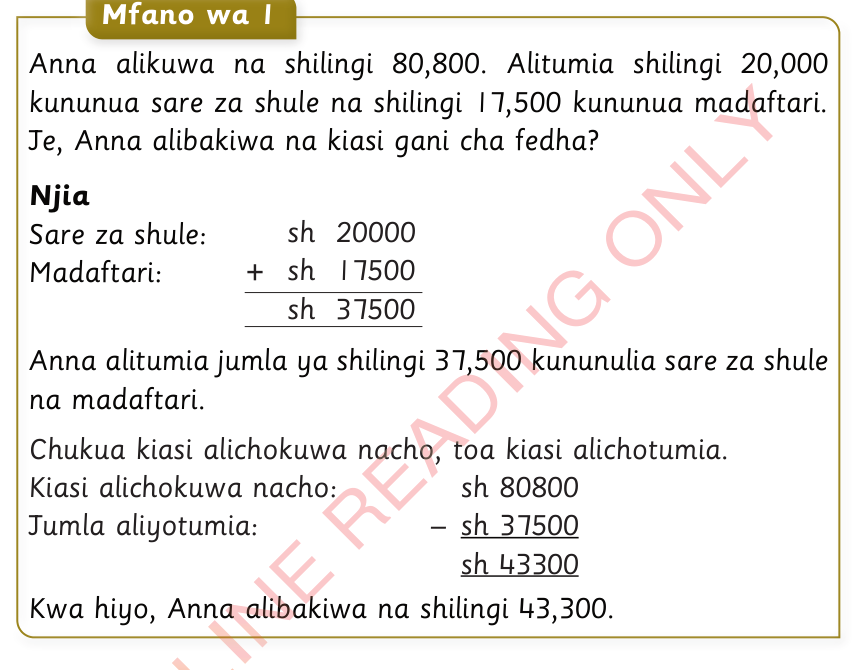
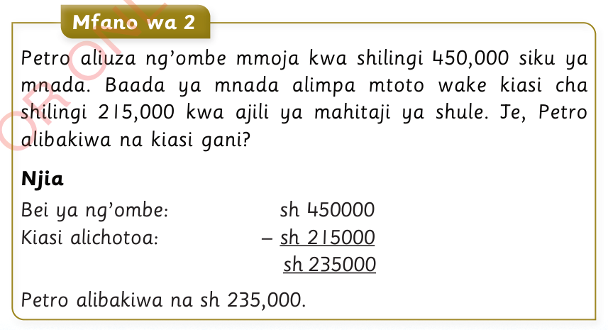

Mafumbo yenye dhana ya kutoa fedha ya Tanzania

Anna alikuwa na shilingi 80,800. Alitumia shilingi 20,000 kununua sare za shule na shilingi 17,500 kununua madaftari. Je, Anna alibakiwa na kiasi gani cha fedha?
Njia
Sare za shule: sh 20000
Madaftari: + sh 17500
sh 37500
Anna alitumia jumla ya shilingi 37,500 kununulia sare za shule na madaftari.
Chukua kiasi alichokuwa nacho, toa kiasi alichotumia.
Kiasi alichokuwa nacho: sh 80800
Jumla aliyotumia: – sh 37500
sh 43300
Kwa hiyo, Anna alibakiwa na shilingi 43,300.

Petro aliuza ng’ombe mmoja kwa shilingi 450,000 siku ya mnada. Baada ya mnada alimpa mtoto wake kiasi cha shilingi 215,000 kwa ajili ya mahitaji ya shule. Je, Petro alibakiwa na kiasi gani?
Njia
Bei ya ng’ombe: sh 450000
Kiasi alichotoa: – sh 215000
sh 235000
Petro alibakiwa na sh 235,000.